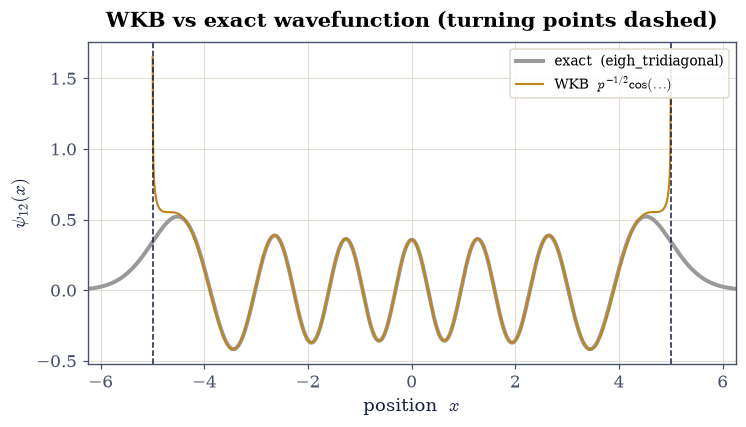
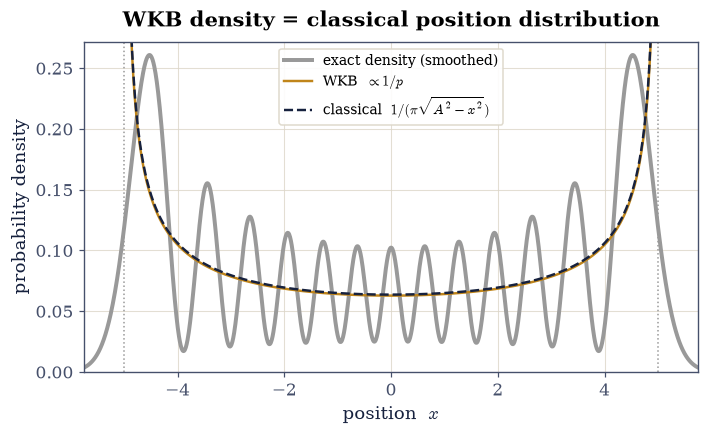
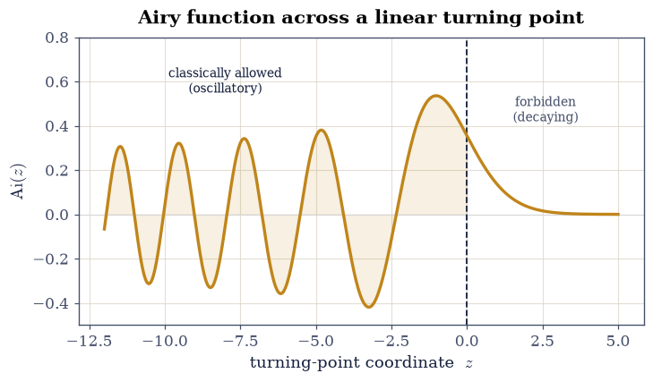
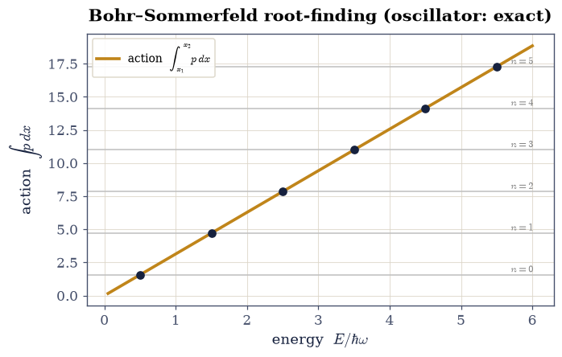
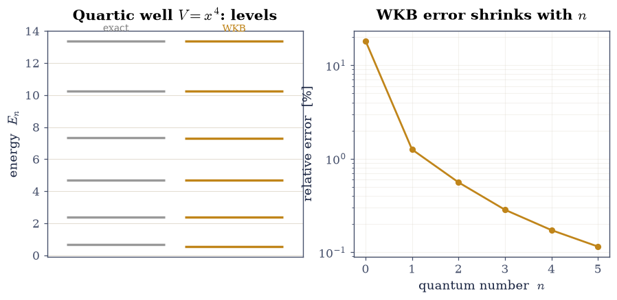
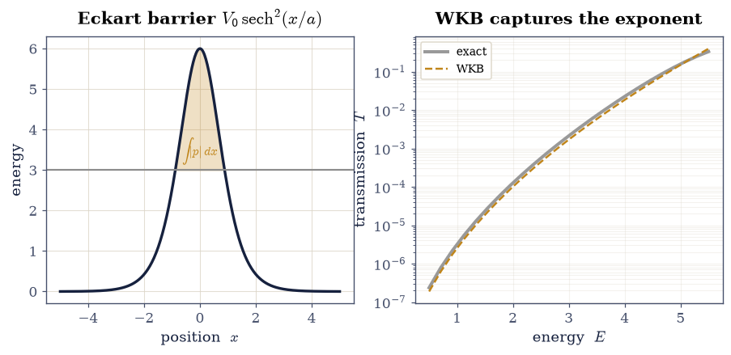
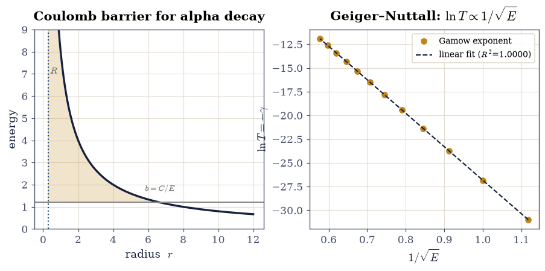

6.23 The WKB Approximation and the Semiclassical Limit#
Notebook overview#
Almost nothing is exactly solvable, and this movement collects the three great ways around that fact. Perturbation theory (§6.21) expands around a solvable Hamiltonian; the variational method (§6.22) guesses a trial state and bounds the energy from above. The WKB approximation is the third and most geometric: it expands in \(\hbar\) itself. When a particle’s de Broglie wavelength is short compared with the scale over which the potential varies, quantum mechanics comes to resemble classical mechanics, and WKB makes the resemblance precise.
The idea is the one Volume II’s Hamilton–Jacobi notebook (§2.10) set up. Write the wavefunction as \(\psi\sim e^{iS/\hbar}\) and expand the phase \(S\) in powers of \(\hbar\): the leading term reproduces the classical action \(\int p\,\mathrm dx\) and the Hamilton–Jacobi equation, and the next term fixes the amplitude as \(1/\sqrt p\), so the probability density \(|\psi|^2\sim1/p\sim1/\text{velocity}\) is exactly the classical position distribution of §6.12 — a particle is most likely found where it moves slowest. The approximation is good where the wavelength varies slowly and fails at the classical turning points, where \(p\to0\) and the wavelength diverges; there the exact solution is an Airy function, and the connection formulas built from it stitch the oscillating and decaying WKB solutions together. Their \(\pi/4\) phase shifts produce the Bohr–Sommerfeld quantization \(\oint p\,\mathrm dx=(n+\tfrac12)h\) — the old quantum rule of §2.10, now with the missing \(\tfrac12\) — exact for the harmonic oscillator and asymptotically exact for any well. In the forbidden region the same machinery gives the WKB tunnelling exponent \(T\sim e^{-(2/\hbar)\int|p|\,\mathrm dx}\), the barrier-of-any-shape generalization of the rectangular result from §6.13, and the basis of Gamow’s theory of alpha decay.
Every result here is checked against something exact: the WKB wavefunction and
spectra against the grid diagonalization of §6.10 (scipy.linalg.eigh_tridiagonal),
and the tunnelling exponent against the exact transmission of a smooth barrier.
We will be honest about where WKB breaks: the turning points, the ground-state
error, and the tunnelling prefactor it gets wrong at leading order.
Method specificity. Each exercise names the exact operation it uses:
scipy.integrate.quadfor the action integrals \(\oint p\,\mathrm dx\) and \(\int|p|\,\mathrm dx\);scipy.optimize.brentqto solve the Bohr–Sommerfeld condition for \(E_n\); andscipy.linalg.eigh_tridiagonalfor the exact benchmark spectra. This is the anti-drift discipline of Volume VI.
How to read the checks. Each exercise ends with a validation comparing a computed result to an expected fact. A ✗ is a prompt to locate a discrepancy — a real error, a convention, or too tight a tolerance — not a verdict that the physics is wrong. Passing is strong evidence of correctness, not proof.
Theory in brief#
The WKB ansatz and the ℏ-expansion#
Write the stationary wavefunction as a single exponential, \(\psi(x)=e^{iS(x)/\hbar}\), and substitute into the time-independent Schrödinger equation \(-\frac{\hbar^2}{2m} \psi''+V\psi=E\psi\). With \(p(x)=\sqrt{2m[E-V(x)]}\) this gives \((S')^2-i\hbar S''=p^2\). Expanding \(S=S_0+\hbar S_1+\cdots\) in powers of \(\hbar\) and matching orders,
The leading term is the classical action — the Hamilton–Jacobi equation of §2.10, so classical mechanics is the \(\hbar\to0\) limit — and the next term makes the amplitude \(e^{iS_1}=1/\sqrt p\). In the classically allowed region (\(p\) real) the WKB wavefunction is therefore
in the forbidden region (\(p\) imaginary), where it grows or decays. The density \(|\psi|^2\sim1/p\sim1/v\) is the classical position distribution of §6.12: the amplitude \(1/\sqrt p\) is just the statement that the probability flux \(|\psi|^2 v\) is conserved.
Validity and the turning points#
WKB holds when the wavelength \(\lambda=2\pi\hbar/p\) varies slowly, \(|\mathrm d\lambda/\mathrm dx|\ll1\) — the potential changes little over a wavelength. It fails at the classical turning points where \(E=V\), \(p\to0\), and \(\lambda\to \infty\): precisely where the density \(1/p\) blows up.
Near a turning point the potential is approximately linear, and the exact solution of the Schrödinger equation is an Airy function — oscillatory on the allowed side, exponentially decaying on the forbidden side. Matching WKB onto the Airy solution gives the connection formulas, which carry a \(\pi/4\) phase shift across each turning point. We state their result and show the Airy behavior rather than grinding through the asymptotics.
Bohr–Sommerfeld quantization#
For a particle bound between two turning points \(x_1<x_2\), requiring the WKB solution to match consistently through both turning points — each contributing a \(\pi/4\) — quantizes the enclosed action:
The \(\tfrac12\) is the turning-point correction the old quantum theory (§2.10, which
used \(\oint p\,\mathrm dx=nh\)) lacked. It is exact for the harmonic
oscillator, giving \(E_n=(n+\tfrac12)\hbar\omega\), and asymptotically exact for
a general well: the error is largest for the ground state and shrinks as \(n\) grows
(the semiclassical limit). We solve Eq. 621 for \(E_n\) with
scipy.optimize.brentq and compare to scipy.linalg.eigh_tridiagonal.
WKB tunnelling and the Gamow factor#
In a classically forbidden region under a barrier the WKB solution decays as \(e^{-\frac1\hbar\int|p|\,\mathrm dx}\), so the transmission probability is
the tunnelling exponent for a barrier of any shape (the constant-barrier \(e^{-2\kappa a}\) of §6.13 is the special case). It captures the dominant exponential suppression; the prefactor differs at leading order, and we say so honestly. This is the Gamow factor of alpha decay: because the exponent is enormous and exquisitely sensitive to energy, nuclear half-lives span nanoseconds to billions of years — the Geiger–Nuttall law, \(\log(\text{half-life})\propto1/\sqrt E\).
Reference: Griffiths [GS18] (the WKB approximation, connection formulas, Bohr–Sommerfeld, tunnelling) and Nolting [Nol17]; cross- reference Volume II §2.10 (Hamilton–Jacobi, the classical action, action-angle and the old quantization), §6.12 (the classical position distribution, the correspondence principle), §6.13 (tunnelling, the constant-barrier limit), §6.10 (the exact benchmark spectra), §6.21/§6.22 (the other two approximation methods), and forward to §6.24 (time-dependent perturbation theory).
Setup#
The data are the working units \(\hbar=m=1\) (and \(\omega=1\) for the oscillator, so an
oscillator energy is measured in units of \(\hbar\omega\)) and the classical momentum
\(p(x)=\sqrt{2m[E-V]}\) — a definition transcribed from the theory, not a construction,
and the quantity every formula below is written in terms of. The instruments are the
turning-point locator, which is a bracketing scan over \(V(x)-E\) handed to
scipy.optimize.brentq, and the benchmark spectrum, whose finite-difference
Hamiltonian was built from scratch in §6.10 and is restated here as a tool
(scipy.linalg.eigh_tridiagonal).
The three results the notebook is named for are deliberately absent: you build the semiclassical wavefunction in Exercise 1, the Bohr–Sommerfeld energy solver in Exercise 4, and the WKB tunnelling exponent in Exercise 6.
The Setup below holds this notebook’s data and instruments — nothing you are asked to build. It is collapsed so the building stays yours; expand it whenever you want the details.
Exercise 1 — The semiclassical wavefunction#
In the classically allowed region the WKB wavefunction Eq. 619 is an
amplitude times a phase, \(\psi\approx p^{-1/2}\cos\!\big(\frac1\hbar\int_{x_1}^{x}
p\,\mathrm dx-\frac\pi4\big)\): the phase is the classical action accumulated from the
left turning point \(x_1\), and the \(-\pi/4\) is the connection-formula shift that
Exercise 3 will explain. The form solves no normalization condition, so it leaves
exactly one number free — an overall amplitude — and the fair comparison fixes that
number by a least-squares match to the exact state in the bulk rather than by fiat.
The specimen is the harmonic oscillator \(V(x)=\tfrac12x^2\) at a high quantum number,
\(n=12\), where the wavelength is short and WKB should be at its best; the exact
eigenfunction comes from the same finite-difference Hamiltonian as exact_spectrum,
written out separately here only because the eigenvectors are needed, not just the
eigenvalues. Away from the turning points \(x=\pm A\), with \(A=\sqrt{2E_n}\), the two
curves should be indistinguishable; at them the \(1/\sqrt p\) amplitude diverges, and
that failure is the whole reason Exercise 3 exists.
Write
wkb_wavefunction(x, E, V)for a sorted gridx: take \(p\) frommomentum, treat the leftmost allowed grid point as \(x_1\), accumulate the phase \(\frac1\hbar\int_{x_1}^{x}p\,\mathrm dx\) withscipy.integrate.cumulative_trapezoid, and return \(p^{-1/2}\cos(\text{phase}- \pi/4)\),nanin the forbidden region. Write this one yourself — the implementation is the lesson.Diagonalize the oscillator with
exact_spectrum’s machinery (scipy.linalg.eigh_tridiagonal) to get the exact state \(\psi_n\) and energy \(E_n\) for a high \(n\) (take \(n=12\)).Evaluate your
wkb_wavefunctionat that \(E_n\).Fix the single free amplitude by a least-squares match to \(\psi_n\) in the bulk (\(|x|<0.85\,A\)).
Overlay the two and mark the turning points.
oscillator n=12: E_n = 12.4994 (exact (n+1/2) = 12.5)
turning point A = 4.9999
bulk relative RMS |psi_WKB - psi_exact| = 0.0168

Fig. 578 The semiclassical wavefunction. For the \(n=12\) oscillator state the WKB form \(\psi\approx p^{-1/2}\cos(\tfrac1\hbar\!\int p\,\mathrm dx-\tfrac\pi4)\) (amber) tracks the exact eigenfunction (grey) node for node across the classically allowed bulk, to a relative RMS of under 2%. It breaks down only at the turning points \(x=\pm A\) (dashed), where \(p\to0\) and the \(1/\sqrt p\) amplitude diverges — the one place the short-wavelength assumption fails.#
Validation 1#
The WKB wavefunction must reproduce the exact high-\(n\) eigenfunction across the classically allowed bulk (away from the turning points), confirming \(\psi\sim(1/\sqrt p)e^{i\int p\,\mathrm dx/\hbar}\) as the semiclassical state.
✓ the WKB wavefunction matches the exact n=12 eigenfunction in the allowed bulk (relative RMS < 5%)
True
Exercise 2 — The amplitude and the classical distribution#
The \(1/\sqrt p\) amplitude of Eq. 619 has a purely classical reading. The density \(|\psi|^2\sim1/p\sim1/\text{velocity}\) is exactly the classical position distribution of §6.12 — a particle is most likely found where it moves slowest — which is the correspondence principle in its most concrete form; for the oscillator that distribution is \(P_{\text{cl}}(x)=1/(\pi\sqrt{A^2-x^2})\). The comparison needs one piece of care: WKB’s \(1/p\) is the local average density, not the oscillating one, so the exact \(|\psi_n|^2\) has to be smoothed over a few wavelengths before the two can be laid side by side.
Form the WKB density \(|\psi_{\text{WKB}}|^2\propto1/p(x)\) for the same oscillator state, and the smoothed exact density (a running average of \(|\psi_n|^2\) over a few wavelengths).
Evaluate the classical oscillator distribution \(P_{\text{cl}}(x)=1/(\pi\sqrt{A^2-x^2})\) (§6.12).
Compare all three in the bulk (\(|x|<0.7\,A\)) and confirm they agree; note the divergence at the turning points.
Cite Eq. 619.
mean smoothed-quantum / classical density in the bulk = 1.015 (≈ 1)

Fig. 579 The correspondence-principle density, three ways. The WKB density \(|\psi|^2\sim1/p\) (amber), the smoothed exact quantum density (grey), and the classical position distribution \(P_{\mathrm{cl}}=1/(\pi\sqrt{A^2-x^2})\) (dashed) coincide across the bulk: a particle spends most of its time — and is most likely found — where it moves slowest, near the turning points. All three diverge as \(x\to\pm A\), where the classical speed vanishes; the true quantum density stays finite there and leaks beyond, but in the bulk the semiclassical picture is exact.#
Validation 2#
In the bulk the semiclassical density \(1/p\) (and the smoothed quantum density) must match the classical \(1/(\pi\sqrt{A^2-x^2})\) to within a few percent — \(|\psi|^2\sim1/\text{velocity}\), the correspondence-principle distribution of §6.12.
✓ the WKB/quantum density matches the classical position distribution in the bulk
True
Exercise 3 — Turning points and the connection formulas#
The turning point is the one place the semiclassical picture needs genuinely quantum
repair: the amplitude Eq. 619 is singular exactly where \(E=V(x)\) and
\(p\to0\) Eq. 620. Near such a point the potential is approximately
linear, and there the Schrödinger equation is solved exactly by the Airy function
\(\mathrm{Ai}(z)\) (scipy.special.airy) — oscillatory for \(z<0\), the allowed side, and
exponentially decaying for \(z>0\), the forbidden side. Matching the two WKB branches
onto that single smooth solution is what produces the connection formulas: an
oscillatory \(\frac{2}{\sqrt p}\cos(\frac1\hbar\int_x^{x_2}p\,\mathrm dx'-\frac\pi4)\) on
the allowed side joins a decaying \(\frac{1}{\sqrt{|p|}}e^{-\frac1\hbar\int_{x_2}^x
|p|\,\mathrm dx'}\) on the forbidden side, and the \(\pi/4\) they carry is the fingerprint
of the Airy match — the same \(\pi/4\) that supplies the \(\tfrac12\) in Bohr–Sommerfeld.
Confirm the WKB density \(1/p\) diverges as \(p\to0\) at \(E=V\).
Evaluate \(\mathrm{Ai}(z)\) across the turning point with
scipy.special.airyand show the crossover from oscillation to decay.
Cite Eq. 620.
1/p at 90%/99% of the way to the turning point: 1.12 / 4.76 (diverging as p→0)

Fig. 580 The connection formula made visible. Near a classical turning point the potential is linear and the exact wavefunction is the Airy function \(\mathrm{Ai}(z)\) (scipy.special.airy): oscillatory on the classically allowed side (\(z<0\), where WKB gives \(p^{-1/2}\cos(\ldots)\)) and exponentially decaying on the forbidden side (\(z>0\), where WKB gives \(|p|^{-1/2}e^{-\ldots}\)). Matching the two WKB branches onto this single smooth Airy solution is what stitches them together — and the match forces the \(\pi/4\) phase shift that ultimately supplies the \(\tfrac12\) in Bohr–Sommerfeld. The turning point \(z=0\) (dashed) is exactly where the WKB amplitude \(1/\sqrt p\) diverges and quantum repair is needed.#
Validation 3#
The Airy function must show the two regimes the connection formulas join: oscillatory for \(z<0\) (several sign changes) and monotone decay for \(z>0\) (\(\mathrm{Ai}(z)\to0\) without oscillating). That contrast is the turning-point physics WKB alone cannot supply.
✓ Airy Ai(z) oscillates for z<0 and decays for z>0 (the connection-formula regimes)
True
Exercise 4 — Bohr–Sommerfeld: the oscillator (exact)#
Requiring the WKB solution to match consistently through both turning points — each contributing one of the \(\pi/4\) shifts of Exercise 3 — quantizes the enclosed action, \(\int_{x_1}^{x_2}p\,\mathrm dx=(n+\tfrac12)\pi\hbar\) Eq. 621. Read as an equation for \(E\) this turns the spectrum into a root-finding problem: the action grows monotonically with energy, so each level \(n\) is one crossing of a horizontal line, and the numerics are a quadrature inside a root find. For the harmonic oscillator the action is exactly \(\pi E/\omega\), so the condition returns \(E_n=(n+\tfrac12)\hbar\omega\) — here WKB is not approximate but exact, and the half-integer offset is precisely the turning-point correction that the old quantum theory of §2.10, with its \(\oint p\,\mathrm dx=nh\), was missing.
Write
bohr_sommerfeld_energy(n, V, search, bracket): for a trial energy, take the turning points fromclassical_turning_points, form the action \(\int_{x_1}^{x_2}p\,\mathrm dx\) withscipy.integrate.quad, and drive the residual \(\int p\,\mathrm dx-(n+\tfrac12)\pi\hbar\) to zero overbracketwithscipy.optimize.brentq. Write this one yourself — the implementation is the lesson.Solve for \(E_n\), \(n=0,\dots,5\), in the oscillator \(V=\tfrac12x^2\).
Confirm \(E_n=(n+\tfrac12)\) to numerical tolerance.
Visualize the root-finding: the action curve crossing the quantized levels.
Cite Eq. 621.
Bohr–Sommerfeld E_n: [0.5 1.5 2.5 3.5 4.5 5.5]
exact (n+1/2) : [0.5 1.5 2.5 3.5 4.5 5.5]
max |error| = 8.881784197001252e-15

Fig. 581 Bohr–Sommerfeld solved graphically for the oscillator. The action \(\int_{x_1}^{x_2}p\,\mathrm dx\) rises linearly with energy (amber); the quantization condition sets it equal to \((n+\tfrac12)\pi\hbar\) (grey levels), and scipy.optimize.brentq returns the crossings \(E_n\) (dots). For the oscillator these land on \((n+\tfrac12)\hbar\omega\) to machine precision — WKB is exact here, and the half-integer offset is exactly the turning-point \(\tfrac12\) the old quantum theory of §2.10 was missing.#
Validation 4#
For the oscillator Bohr–Sommerfeld is exact: the roots of Eq. 621 must equal \((n+\tfrac12)\hbar\omega\) to the tolerance of the quadrature and root finder.
✓ Bohr–Sommerfeld is exact for the oscillator, E_n = (n+1/2)ℏω [max|Δ| = 8.88178e-15 (rtol=0.0001, atol=0.0001)]
True
Exercise 5 — Bohr–Sommerfeld for a general well#
The oscillator was the special case where WKB happens to be exact. The quartic well \(V(x)=x^4\) has no closed-form spectrum, which makes it the honest test, with the exact diagonalization of §6.10 supplying the answer to compare against. What should appear is the signature of an asymptotic method: WKB is an expansion in \(\hbar\), so its error is worst for the ground state — barely one wavelength across the well, exactly where a short-wavelength approximation ought to struggle — and shrinks as \(n\) grows and the wavelength shortens. That is the semiclassical limit, and it means WKB is best precisely where diagonalization grids grow expensive.
Compute the exact quartic spectrum with
exact_spectrum(scipy.linalg.eigh_tridiagonal).For each \(n\), solve \(\int p\,\mathrm dx=(n+\tfrac12)\pi\hbar\) with the
bohr_sommerfeld_energyyou wrote in Exercise 4 (scipy.optimize.brentq, action byscipy.integrate.quad).Tabulate the relative error \(|E_n^{\text{WKB}}-E_n^{\text{exact}}|/E_n^{\text{exact}}\).
Show it falls monotonically with \(n\), and plot both the levels and the error.
Cite Eq. 621.
n=0: WKB= 0.5463 exact= 0.6680 rel err=18.22%
n=1: WKB= 2.3636 exact= 2.3936 rel err= 1.26%
n=2: WKB= 4.6705 exact= 4.6968 rel err= 0.56%
n=3: WKB= 7.3148 exact= 7.3357 rel err= 0.28%
n=4: WKB=10.2265 exact=10.2442 rel err= 0.17%
n=5: WKB=13.3638 exact=13.3791 rel err= 0.11%
error falls from 18.2% (n=0) to 0.11% (n=5)

Fig. 582 WKB as an asymptotically exact method. Left: the Bohr–Sommerfeld levels of the quartic well \(V=x^4\) (amber) against exact diagonalization (grey); they are already close and converge upward. Right: the relative error falls monotonically from about 18% for the ground state to well under 1% by \(n=5\) — WKB is a semiclassical approximation, best where the quantum number is large and the wavelength short. The ground state, with barely one wavelength across the well, is exactly where WKB should struggle, and does.#
Validation 5#
WKB must approach the exact quartic spectrum from the semiclassical direction: the relative error is largest at \(n=0\) and decreases with \(n\), dropping below 1%.
✓ Bohr–Sommerfeld quartic error is largest at n=0 and shrinks monotonically below 1% (the semiclassical limit)
True
Exercise 6 — WKB tunnelling vs exact transmission#
Under a barrier \(p\) is imaginary and the WKB solution decays, so the transmission is \(T\approx e^{-(2/\hbar)\int_{x_1}^{x_2}|p|\,\mathrm dx}\) Eq. 622 — and this holds for a barrier of any shape, the constant-barrier \(e^{-2\kappa a}\) of §6.13 being the special case. The specimen is the Eckart barrier \(V(x)=V_0\,\mathrm{sech}^2(x/a)\) with \(V_0=6\), \(a=1\), chosen because its transmission is known in closed form. The result is a partial success worth stating honestly: on a log axis the WKB and exact curves run parallel, so the exponent — the physically dominant quantity, spanning orders of magnitude — is right, but a roughly constant vertical offset remains, because WKB gets the prefactor wrong at leading order.
Write
wkb_tunneling(E, V, search): locate the barrier’s turning points withclassical_turning_points, integrate \(\int_{x_1}^{x_2}\sqrt{2m[V(x)-E]}\,\mathrm dx\) between them withscipy.integrate.quad, and return \(e^{-(2/\hbar)\int|p|\,\mathrm dx}\).Evaluate it across energies \(E<V_0\), alongside the exact Eckart transmission \(T(E)\).
Compare on a log axis, and measure the gap in \(\ln T\) deep under the barrier (\(E<V_0/2\)), where the barrier integral dominates.
Cite Eq. 622.
WKB vs exact, deep-tunnelling regime E<V0/2:
transmission spans 2.36e-07 … 1.24e-03
max relative gap in the exponent ln T = 0.034
WKB/exact prefactor ratio ≈ 0.80 (differs, as expected)

Fig. 583 WKB tunnelling through a smooth barrier. Left: the Eckart barrier \(V_0\,\mathrm{sech}^2(x/a)\) with an energy \(E\) (grey line); the shaded forbidden region between the turning points is where \(\int|p|\,\mathrm dx\) accumulates. Right: the WKB transmission \(e^{-(2/\hbar)\int|p|\,\mathrm dx}\) (amber) against the exact transmission (grey) on a log axis, over five orders of magnitude. The two are parallel — WKB nails the dominant exponential slope — while a roughly constant vertical offset shows the prefactor WKB gets wrong at leading order. The rectangular-barrier \(e^{-2\kappa a}\) of §6.13 is the special case of this formula.#
Validation 6#
In the deep-tunnelling regime the WKB and exact transmissions must agree in the exponent — the physically dominant quantity — to a few percent, even though their prefactors differ: \(T\sim e^{-(2/\hbar)\int|p|\,\mathrm dx}\) is the WKB tunnelling formula.
✓ the WKB tunnelling exponent captures the exact transmission's exponential suppression (log agrees to <5% deep under the barrier)
True
Exercise 7 — Alpha decay and the Geiger–Nuttall law (student)#
Gamow’s account of alpha decay is Eq. 622 applied to a nuclear Coulomb barrier: the alpha particle rattles inside the nucleus and escapes by tunnelling through \(V(r)=C/r\), from the nuclear radius \(R\) out to the outer turning point where \(V(b)=E\), that is \(b=C/E\). The resulting Gamow exponent is enormous and its energy dependence is close to \(1/\sqrt E\), so \(\ln T=-\gamma\) comes out very nearly linear in \(1/\sqrt E\). That is the Geiger–Nuttall law, \(\log(\text{half-life})\propto 1/\sqrt E\): because the exponent is huge, a modest change in decay energy swings the rate by orders of magnitude, which is why alpha-decay half-lives run from nanoseconds to billions of years — the entire spread explained by one exponential.
Model the barrier outside the nucleus as Coulomb, \(V(r)=C/r\) for \(r>R\) (a nuclear radius \(R\)), in scaled units.
Compute the Gamow exponent \(\gamma(E)=\frac{2}{\hbar}\int_R^{b}\sqrt{2m[C/r-E]}\, \mathrm dr\) with
scipy.integrate.quad.Fit \(\ln T=-\gamma\) against \(1/\sqrt E\), and report the span of \(T\) across a modest energy range.
Cite Eq. 622.
Geiger–Nuttall fit ln T = -35.32·E^(-1/2) + 8.48, R² = 1.00000
transmission span across E=0.8…3.0: 1.96e+08× (orders of magnitude from a factor 3.8 in energy)

Fig. 584 Gamow’s theory of alpha decay. Left: the alpha particle sits in a nuclear well and must tunnel through the Coulomb barrier \(V=C/r\) (grey), from the nuclear radius \(R\) out to the turning point \(b=C/E\) (shaded forbidden region). Right: the WKB log-transmission is almost perfectly linear in \(1/\sqrt E\) (fit dashed, \(R^2>0.999\)) — the Geiger–Nuttall law. Because the Gamow exponent is huge and scales as \(1/\sqrt E\), a modest change in decay energy swings the tunnelling rate — and the half-life — by many orders of magnitude, exactly the span (nanoseconds to billions of years) that Gamow’s one exponential explained.#
Validation 7#
The Gamow exponent must make \(\ln T\) linear in \(1/\sqrt E\) (the Geiger–Nuttall law) and span many orders of magnitude across a modest energy range — the origin of the vast spread of alpha-decay half-lives.
✓ the Coulomb-barrier Gamow exponent gives ln T ∝ 1/√E (Geiger–Nuttall) spanning >4 orders of magnitude
True
Exercise 8 — (Synthesis) The seam between two mechanics#
The WKB approximation is where the wave remembers it was a particle. We wrote the wavefunction as \(\psi\sim e^{iS/\hbar}\) and found its phase to be nothing but the classical action of Volume II; in the limit of a vanishing wavelength the Schrödinger equation became the Hamilton–Jacobi equation of §2.10, and classical mechanics reappeared as the \(\hbar\to0\) shadow of quantum mechanics. From that one idea came the semiclassical wavefunction, the density \(1/p\) that is the classical distribution of §6.12, the old quantization rule of §2.10 — now with its missing \(\tfrac12\) restored by the turning-point phases — and a tunnelling formula good for a barrier of any shape, the formula that turned the wild scatter of radioactive half-lives into a single exponential.
With WKB we hold the third and last of the great approximation methods. Faced with a problem no one can solve exactly, one can expand around a solvable Hamiltonian (perturbation theory, §6.21), guess a trial state and bound the energy (variational, §6.22), or shrink the wavelength and let mechanics go classical (semiclassical, WKB). Perturbation theory needs a nearby solvable neighbour; the variational method needs a good guess; WKB needs a short wavelength. Between them they cover most of what the exactly-solvable models of Movements I–IV cannot reach.
It is worth pausing on the strangeness of the bridge. Bohr counted wavelengths around an orbit and got the hydrogen spectrum nearly right; Hamilton, a century before anyone suspected the electron was a wave, wrote mechanics in the language of phases and actions. WKB shows why both were reaching the same truth from opposite sides: the action is a phase, and quantization is what happens when a wave has to close on itself. The next notebook (§6.24) puts time back in and asks how a perturbation that switches on drives transitions between states — Fermi’s golden rule, and the theory of how atoms absorb and emit light.
Notebook summary#
The WKB ansatz Eq. 618: \(\psi\sim e^{iS/\hbar}\) expanded in \(\hbar\) gives the classical action at leading order (Hamilton–Jacobi, §2.10) and the amplitude \(1/\sqrt p\) at next order — verified against the exact \(n=12\) oscillator state to under 2% in the bulk.
The classical distribution Eq. 619: \(|\psi|^2\sim1/p\sim1/v\), matching the classical \(1/(\pi\sqrt{A^2-x^2})\) of §6.12.
Turning points: the \(1/\sqrt p\) amplitude diverges where \(p\to0\); the exact Airy solution (
scipy.special.airy) and its \(\pi/4\)-carrying connection formulas repair the match.Bohr–Sommerfeld Eq. 621: \(\oint p\,\mathrm dx=(n+\tfrac12)h\) is exact for the oscillator and asymptotically exact for the quartic (error \(18\%\to0.1\%\) as \(n\) grows), by
scipy.optimize.brentqvsscipy.linalg.eigh_tridiagonal.WKB tunnelling Eq. 622: \(T\sim e^{-(2/\hbar)\int|p|\,\mathrm dx}\) captures the exact Eckart-barrier exponent (prefactor aside), and its Coulomb- barrier form gives Gamow’s Geiger–Nuttall law (\(\ln T\propto1/\sqrt E\)).
Outlook#
Time-dependent perturbation theory and Fermi’s golden rule: transitions, absorption, and emission (§6.24).
The path integral and its semiclassical limit; instantons and tunnelling as least-action paths in imaginary time (horizons).
The Maslov index and higher-order WKB corrections — systematically improving the \(\hbar\)-expansion (horizons).
Cross-reference Volume II §2.10 (Hamilton–Jacobi, the action, action-angle and the old quantization), §6.12 (the classical distribution), §6.13 (tunnelling), §6.10 (exact spectra), §6.21/§6.22 (the other approximation methods), forward to §6.24.